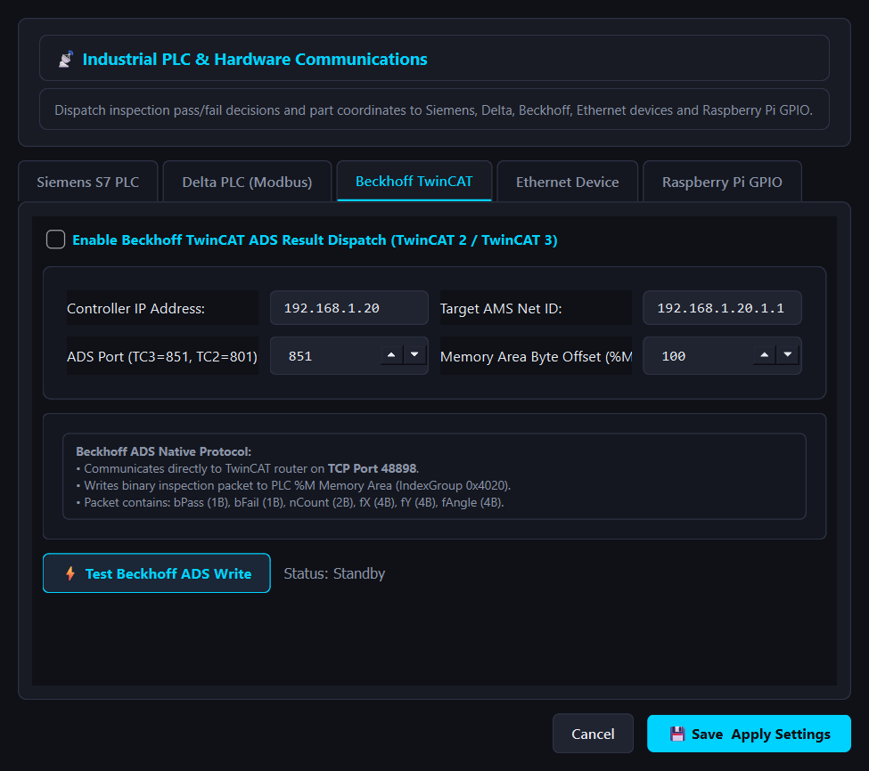
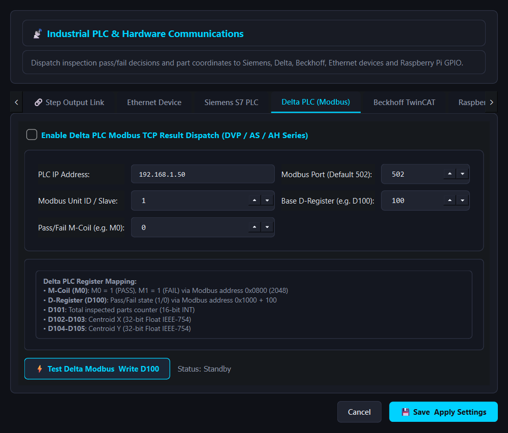

Industrial PLC & Hardware Communications
Connect VisionStudio directly to Siemens, Delta, Beckhoff PLCs, industrial robot controllers, and Raspberry Pi GPIO hardware with zero intermediary drivers.
Siemens S7 PLC Integration (Port 102)

Delta PLC via Modbus TCP (Port 502)

Beckhoff ADS & Industrial Ethernet


Beckhoff TwinCAT ADS
Communicates over TCP port 48898 writing directly to TwinCAT %M memory area.
Generic Ethernet Devices
Connects to ABB, KUKA, Fanuc, and Universal Robots using JSON or CSV over TCP/UDP.
Raspberry Pi Industrial Digital I/O

Step-Level Remote Device Linking (link_to_remote)
VisionStudio features a unified telemetry dispatch engine that bridges computer vision operations with industrial machinery:
Per-Step Remote Toggle
In the Pipeline Manager table, each step displays a dedicated 📡 PLC checkbox. Clicking it toggles the link_to_remote parameter in realtime.
Property Inspector Switch
When selecting any step, the Property Inspector drawer renders a dedicated Link Step to Remote Device (PLC/Ethernet) toggle switch alongside a Configure Remote Devices... shortcut button.
Automated Payload Encoding
When an inspection cycle executes, results from linked steps are extracted (pass/fail status, object count, subpixel centroid coordinates, bounding box metrics, and OCR strings) and packaged for all enabled fieldbus clients.
Non-Blocking Socket Dispatch
Network dispatch occurs on dedicated asynchronous daemon worker threads, preventing PLC network latency or retry timeouts from slowing down 60 FPS vision inspection.